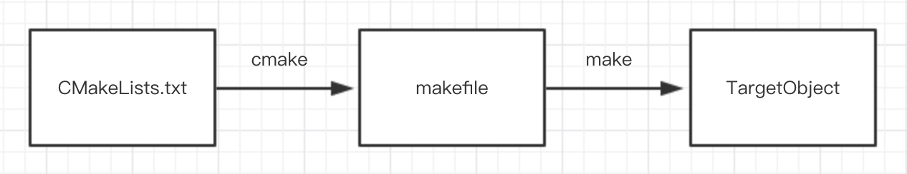
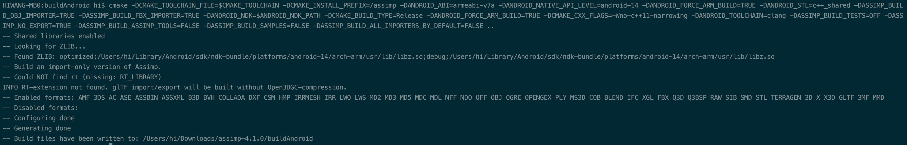
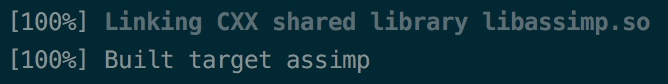
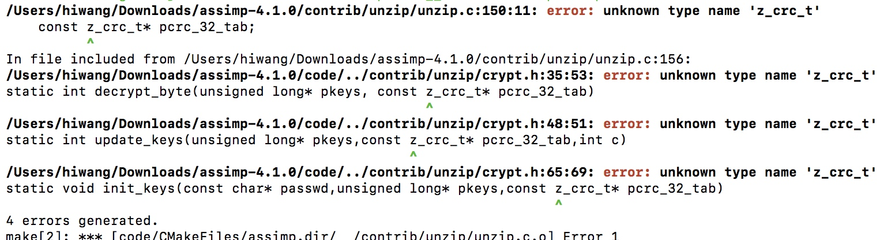

Assimp Android 编译
Assimp的全称是Open Asset Import Library，一个很流行的OpenGL 3D+4D 模型处理框架。提供C/C++的API，提供C#, Java, Python, Delphi, D等语言的封装调用。支持Android和iOS平台。本文详细介绍如何编译适用于Android平台的.so库，并记录过程中踩到的坑。
准备知识
将一个C++的工程编译成Android平台可用的.so库，需要用到一些额外的工具。在开始之前，最好先了解下相关的知识点。
- make与makefile
我们在处理命令时，如果单条命令可以直接执行，但是命令比较多的时候就没办法挨个手动调用，这时候可以写到makefile文件里，通过make命令批量处理。可以把make理解为批处理工具，批量处理makefile中的命令。
- cmake和CMakeLists.txt
上面提到，当命令比较多的时候，我们把命令写到makefile中，通过make程序批量处理。但是makefile本身也比较难挨个手写，这时候就出现了自动生成makefile的工具cmake。也就是通过cmake我们可以很方便的生成makefile文件。那么问题来了，cmake依据什么来生成makefile文件呢，很显然，cmake通过CMakeLists.txt文件生成makefile文件。
- 有图有真相（用个图简单描述下上面几个工具的关系）

-
更加详细的介绍可以参考下面的文章：
相关环境和版本
Assimp官方文档没有提供比较明确的编译成*.so*文件的说明。网上的资料也比较少，而且最新的也是一年前的了。在编译的时候会有很多坑。不同的版本和环境，编译时遇到的坑也不尽相同。我这里列出详细的环境和版本参数，供大家参考。
| 工具 | 版本 |
|---|---|
| 操作系统 | macOS High Sierra 10.13.4 |
| Assimp | 4.1.0 |
| cmake | 3.11.2 |
| make | GNU Make 3.81 |
| NDK | 17.0.4754217 |
注：上面的环境，Assimp和NDK的版本比较重要，特别是Assimp，有些版本是有bug的，编译时直接报错。Release版本还有bug，服了~
交叉编译toolchain
为了在宿主机器上（例如Mac电脑）编译出目标机器上（Android or iOS）使用的库，我们最少要指定一些参数，比如目标机器系统、一些依赖的库以及具体的编译参数等等。我们把这些具体的参数写到一个cmake文件中，并传给cmake，以便于生成对应的Makefile文件。
Android NDK提供了这个文件，路径在NDK/build/tools/cmake/android.toolchain.cmake。通过设置一些必要的参数，我们可以直接使用这个文件编译获得可以运行在Android平台的动态链接库。
cmake生成makefile
下面我们通过cmake生成makefile了。
首先执行下面的命令：
cd xxx/assimp // 下载assimp，然后解压，进入assimp根目录
mkdir buildAndroid // 创建文件夹
cd buildAndroid // 进入这个文件夹
然后执行下面的命令。（为了方便阅读，每个参数后面都加了个换行）
cmake
-DCMAKE_TOOLCHAIN_FILE= ~/Library/Android/sdk/ndk-bundle/build/cmake/android.toolchain.cmake // 指定交叉编译cmake文件，这里用的安卓ndk自带的
-DCMAKE_INSTALL_PREFIX=/assimp // 最终生成的.so库的名称，这个随便填
-DANDROID_ABI=armeabi-v7a // 生成的.so的ABI类型
-DANDROID_NATIVE_API_LEVEL=android-14
-DANDROID_FORCE_ARM_BUILD=TRUE
-DANDROID_STL=c++_shared
-DASSIMP_BUILD_ALL_IMPORTERS_BY_DEFAULT=FALSE // 关掉所有的3D模型加载功能，Assimp支持几十种模型的加载，没必要都开启
-DASSIMP_BUILD_OBJ_IMPORTER=TRUE // 编译obj格式的3dModel的加载功能
-DASSIMP_BUILD_FBX_IMPORTER=TRUE // 编译fbx格式的3dModel的加载功能
-DANDROID_NDK=~/Library/Android/sdk/ndk-bundle
-DCMAKE_BUILD_TYPE=Release
-DCMAKE_CXX_FLAGS=-Wno-c++11-narrowing
-DANDROID_TOOLCHAIN=clang
-DASSIMP_BUILD_TESTS=OFF // 选OFF，不然会有奇怪的错误
-DASSIMP_NO_EXPORT=TRUE // 我只需要导入3D模型，不需要导出，所以我填了OFF
-DASSIMP_BUILD_ASSIMP_TOOLS=FALSE
-DASSIMP_BUILD_SAMPLES=FALSE
.. // ..代表上级目录，里面有cmake需要CMakeLists.txt文件
处理成功的结果，如图：

make
上面的步骤生成了makefile文件，下面进行make批处理。
make -j8 // 在buildAndroid目录下执行make操作。其中-j8是指多线程个数，根据自己电脑配置，选择不同线程数，线程数越多编译的越快。

但是通常事情没那么简单，这一步一般会遇到各种问题，要耐心Google，一个一个的解决。在本文的最后会附上常见的错误，希望能帮助到你。
获得libassimp.so文件
上面make如果没出错的话，直接去assimp/buildAndroid/code目录下寻找libassimp.so文件吧，这个就是我们的目标啦。
make命令常见错误与解决方案。
我这里只遇到一个问题：error: unknown type name 'z_crc_t'
错误日志如图

这个错误的原因是assimp依赖的unzip库的源码有bug…找到对应的文件，添加z_crc_t的声明即可。
typedef unsigned long z_crc_t;
其他错误我没遇到，如果遇到了其他错误可以参考本文最后的参考链接里的坑与解决方案~
参考链接
我是通过下面的几篇文章折腾出来的，有兴趣的可以看下。
Assimp编译实录
Compile Assimp Open Source Library For Android
Windows环境下编译Assimp库生成Android可用的.so文件
Android NDK Adventures
转载请注明出处：Assimp Android 编译 - 专业点
欢迎关注我的公众号

推荐

公众号推荐
欢迎关注我的公众号一起愉快的交流。